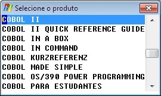
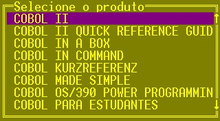

Caixa de seleção baseada em arquivo.
BoxFileSelect PROVIDER
provedor
[ TITLE
mensagem ]
[ LINE
linha ]
[ COLUMN
coluna ]
WIDTH
colunas
HEIGHT
linhas
[ WORK-AREA
comunicação ]
{
[ LEFT-WIDTH
largura-visível-da-coluna-esquerda
]
[ RIGHT-WIDTH
largura-visível-da-coluna-direita
] }
[ ORDER-LEFT
| ORDER-RIGHT
]
[ RETURN-LEFT
| RETURN-RIGHT
]
[ OPTION
opção-default;opção-selecionada
]
[ EDIT-ON
KEY;tecla
]
[ TIMEOUT-ENABLE
| TIMEOUT-RETRY
| TIMEOUT-DISABLE
]
[ TIMEOUT-RETURN ;
retorno-tempo-limite-decorrido
]
provedor
Nome
do módulo COBOL de apoio especialmente preparado para fornecer
os elementos selecionáveis na lista em função de
uma base de dados.
mensagem
Título da janela até 78 caracteres.
Linha de posicionamento da janela.
Coluna de posicionamento da janela.
Largura da janela em colunas
Altura da janela em linhas
comunicação
Variável
de até 50 bytes reservada para passagem de parâmetros
para o provedor permitindo definir
critérios de seleção.
largura-visível-da-coluna-esquerda
Tamanho da largura do elemento da coluna da esquerda em bytes (de 0 a 80).
largura-visível-da-coluna-direita
Tamanho da largura do elemento da coluna da direita em bytes (de 0 a
80).
ORDER-LEFT ou
ORDER-RIGHT
Determina por qual
coluna a lista deve ser ordenada.
RETURN-LEFT
ou RETURN-RIGHT
Determina qual coluna
deve retornar em opção-selecionada.
opção-default
Valor ou variável que indica em qual das opções deve estar inicialmente o foco.
Variável de até
76 bytes que receberá o retorno dos dados selecionados ou
espaços caso o usuário tenha desistido da
seleção.
EDIT-ON
Habilita
o retorno por tecla de função.
tecla
Código
da tecla pressionada (CWEDIT.CPY).
Habilita o término por tempo de ociosidade decorrido. A opção default será automaticamente selecionada pelo sistema em função do limite de ociosidade declarado na configuração.
Habilita 5 segundos de espera para mensagens de comentários. Sem maiores consequências o processamento poderá prosseguir mesmo sem a intervenção ou conhecimento do usuário.
A intervenção do usuário será obrigatória. O processamento só prosseguirá ao ser selecionado um push-button manualmente.
retorno-tempo-limite-decorrido
Variável que receberá o retorno indicativo da ocorrência de limite de tempo decorrido (1 ou zero caso o usuário tenha selecionado uma opção manualmente).
A acentuação deve ser codificada com a página de código 850, os processadores de tela se encarregam de traduzir para o codificação apropriada a plataforma de execução:
|
Codificação COBOL |
|
EXEC COBOLware
BoxFileSelect PROVIDER
"CWCAD3" |
|
Efeito no modo gráfico |
|
 |
|
Efeito no modo texto |
|
 |
BoxSelect
Line
Buttons
Object
COMBOBOX
Object
LIST-BOX
Send
Message